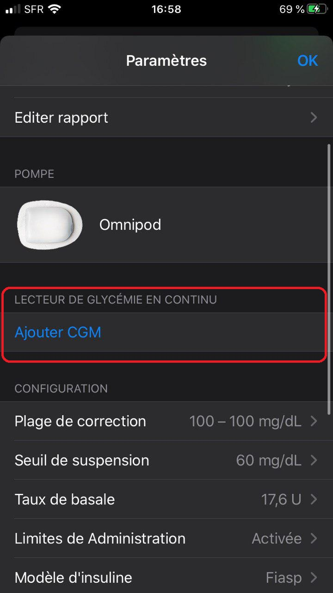
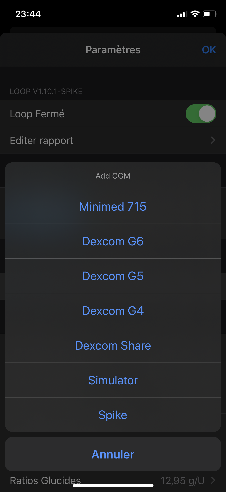

Ajouter le CGM
Maintenant, nous devons ajouter une source CGM pour que Loop récupère les données de glycémie. Depuis l'écran des réglages de Loop, séléctionnez Ajouter CGM.



Les sélections standards disponibles seront :
- Dexcom G6
- Dexcom G5
- Dexcom G4
- Dexcom Share
Si vous avez ajouté une pompe Medtronic compatible plus tôt dans le processus, alors vous allez aussi voir une option pour le capteur medtronic compatible qui fonctionne avec cette pompe. Si vous utilisez un capteur MDT compatible, séléctionnez cette option et les données CGM seront envoyées à Loop quand le statut de la pompe est mis à jour.
Dexcom G5 et G6
Les options pour le Dexcom G5 et G6 demandent seulement l'ajout de l'ID du transmetteur actif, et l'app Dexcom correspondante qui tourne en parallèle de Loop. Vous n'avez pas à ajouter vos identifiants Dexcom Share, mais si vous le faites, assurez-vous de les faire correspondre avec ceux entrés dans votre app Dexcom.
Quand vous allez changer de transmetteurs, vous devrez sélectionner le bouton Supprimer CGM tout en bas de la page d'info du CGM dans Loop. Ensuite, vous sélectionnerez le système Dexcom une nouvelle fois et vous ajouterez le nouvel ID du transmetteur. Appuyez sur l'ID de l'ancien transmetteur pour le mettre à jour ne fonctionnera pas.
Si vous ne mettez pas à jour l'ID du transmetteur quand vous changez de transmetteur actif, votre Loop sera obligé d'aller chercher les données CGM sur les serveurs Dexcom Share. Un petit nuage apparaîtra alors au-dessus de la mesure de glycémie dans Loop et cela devrait vous prévenir que vous avez peut être oublié de mettre à jour votre ID de transmetteur.
Dexcom G4
Les utilisateurs Dexcom G4 auront besoin d'avoir l'app Dexcom G4 Share2 active sur leur iPhone et appairée à leur récépteur Dexcom G4 Share.
Dexcom Share
La sélection Dexcom Share est essentiellement faite pour les gens qui souhaite tester Loop sans une source CGM locale et qui ne font pas tourner une app Dexcom sur leur iPhone. Cette sélection nécessite une connexion à un compte Dexcom Share avec des données en direct et une connection internet fonctionnelle.
À propos des identifiants Dexcom Share
Pour toutes les sélections, les identifiants Dexcom Share sont les mêmes que vous utilisez pour vous connectez à l'app active Dexcom de votre iPhone. Le compte Dexcom Share n'a pas toujours les mêmes identifiants que votre compte Dexcom Clarity. Pour les utilisateurs G4, le compte Share se trouve dans l'onglet compte dans l'app. Pour les utilisateurs G5/G6, malheureusement, il n'y a aucune information dans l'app qui affiche le nom de votre compte. L'information est rentré quand vous vous connectez pour la première fois à l'app et n'est jamais affiché à nouveau, ni visible dans aucun écran d'information. Si vous avez oublié vos identifiants de compte G5/G6, vous pouvez supprimer l'app Dexcom et la retélécharger pour essayer de vous reconnecter. Cela ne va pas provoquer un redémarrage d'une quelconque session de capteur en cours.
Utilisateurs Spike
Pour les utilisateurs utilisant l'app Spike pour accéder à d'autres types de CGM (ou pour éviter d'utiliser l'app Dexcom), vous pourrez trouver les instructions à suivre dans ce document (en anglais). En résumé, il suffit simplement de télécharger la version modifiée de Loop de Cal Young disponible sur ce github et de choisir une des branches Spike disponibles au lieu du github officiel. La procédure ensuite est la même qu'une installation classique. Pour plus d'information sur Spike et Loop, vous pouvez consulter le wiki Loop + Spike.
A noter que l'intégration Spike n'est pas disponible par défaut pour une bonne raison : utiliser Spike avec Loop comporte des risques et peut être dangereux si on ne procède pas à un étalonnage rigoureux de Spike. Vous êtes invité à lire avec attention le document suivant si vous souhaitez utiliser Spike comme source CGM.
Prochaine étape : paramétrisation
Maintenant que vous avez ajouté votre source CGM, vous allez devoir paramétrer Loop. Veuillez vous diriger vers la page de paramétrisation pour de l'aide sur cette partie importante de la mise en place de Loop.